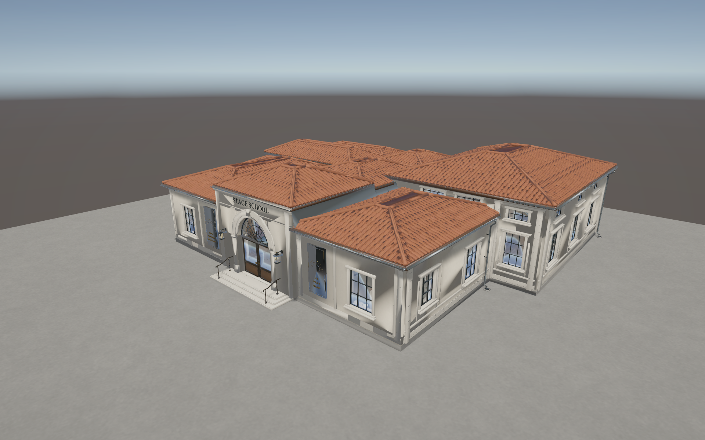
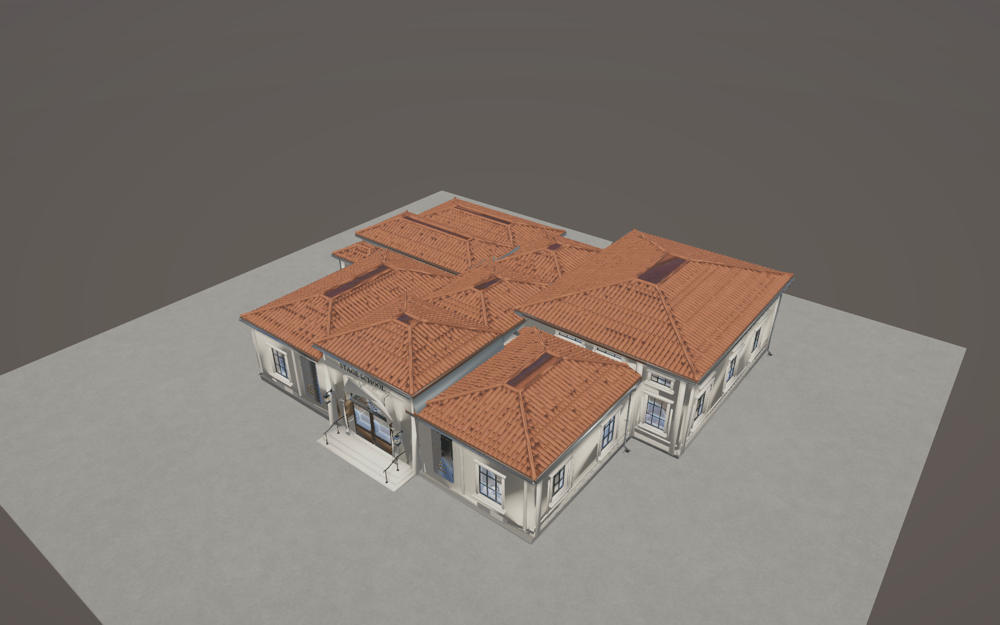
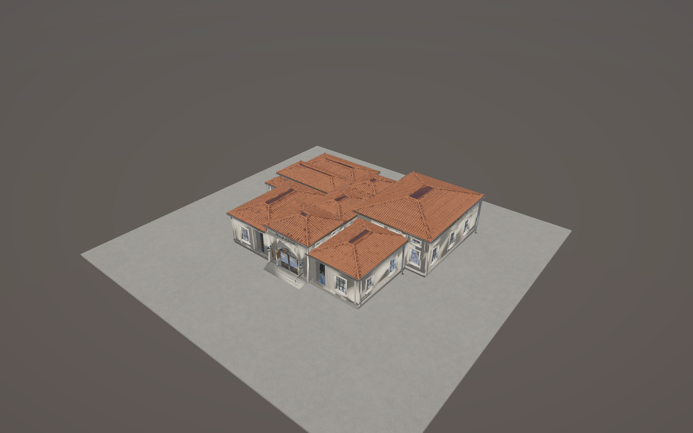
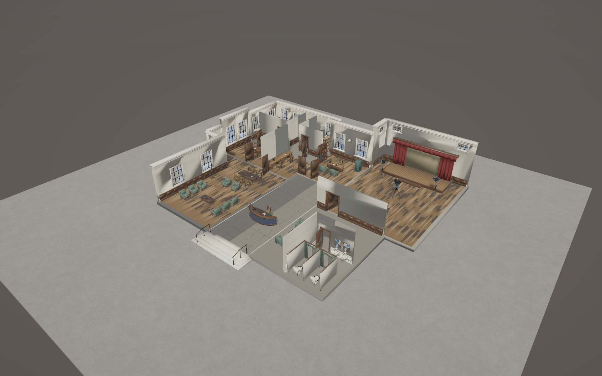
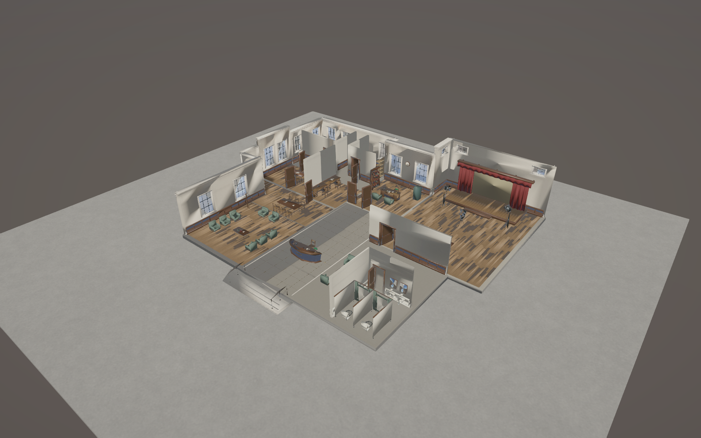
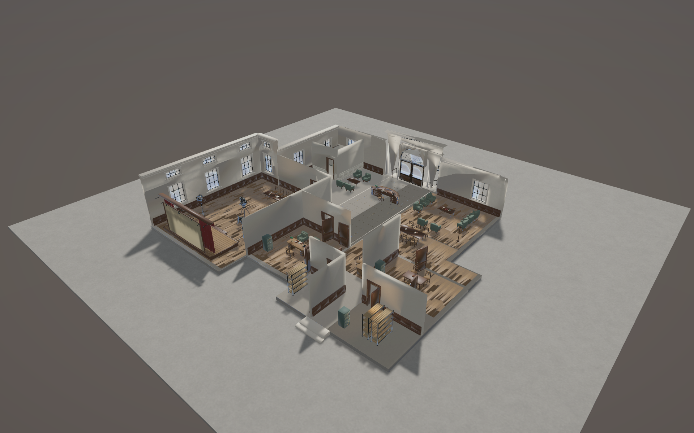
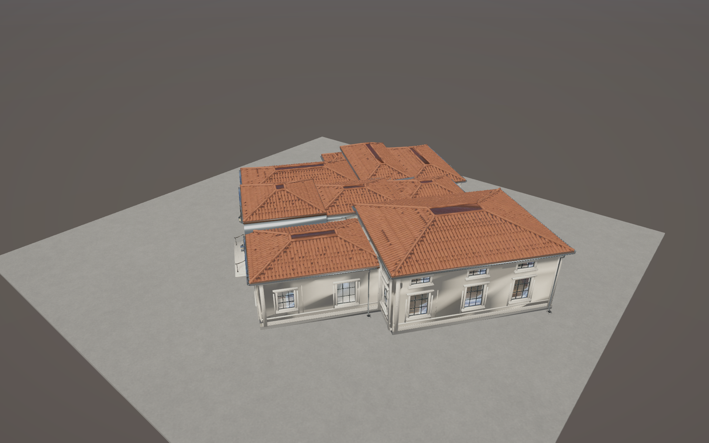
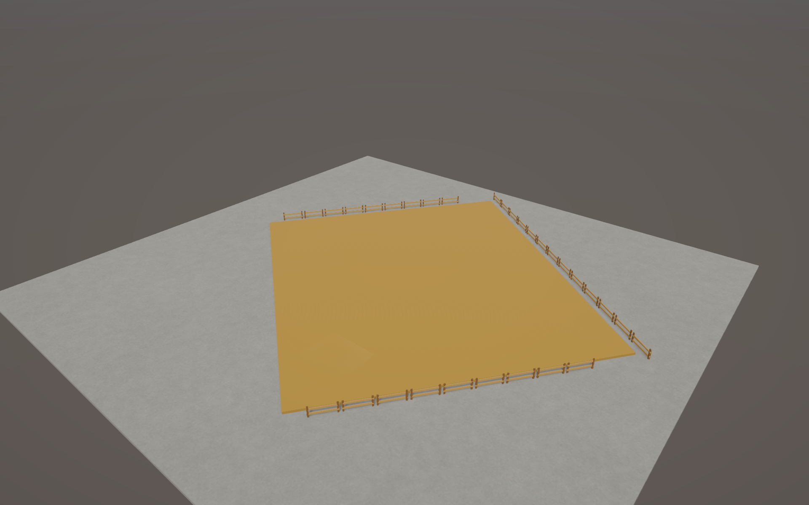
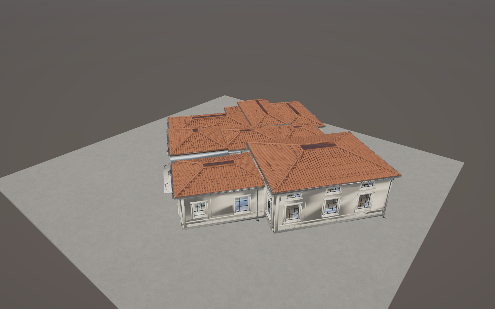

Historical B review: its static capture evidence was contaminated by overlapping LOD representations. Open the corrected B1 review and current status.
NOT PRODUCTION READY. Final inspection still shows damaged roof detail and shading changes. One corrective pass has been used. The A3.2 master is unchanged.
Full completion report and manual checklist · Path checks · Six focused checks · Approved A3.2 gallery









Stage School B — infrastructure implemented; runtime visual quality NOT approved The latest A3.2 master (1,805,401 triangles, 2,631,815 vertices, 319 renderers, 37 materials) is preserved. The brief's older count preceded canopy removal and downpipe consolidation. All 548 frozen master files passed SHA-256 preservation checks. No Studio.unity edit, commit or push. 1. Runtime architecture: Assets/SilverScreen/Environment/StageSchoolB/Resources/StageSchool_Runtime.prefab. Three derived visual branches share one building root, independent physical collision, generic BuildingCutawayController, construction bindings, explicit door states and infrastructure metadata. The existing resource template is loaded by StudioConstructionDriver; no source-prefab replacement. 2–5. Final full-interior per-LOD counts: LOD0: 676,954 triangles; 556,275 vertices; 319 renderers; 37 distinct materials; 784 material slots; approximately 31.24 MiB mesh vertex/index buffers. LOD1: 318,411 triangles; 475,019 vertices; 127 renderers; 37 distinct materials; 493 material slots; approximately 25.34 MiB mesh vertex/index buffers. LOD2: 167,184 triangles; 231,039 vertices; 127 renderers; 37 distinct materials; 493 material slots; approximately 12.47 MiB mesh vertex/index buffers. Memory estimates exclude textures, colliders, Unity overhead and potential readable CPU copies; all three LOD assets remain resident. Shared equipment mesh instances are counted once for memory, per instance for draw geometry. No LOD3. 6. LOD thresholds: 0.70 / 0.28 / 0.008 screen-relative height, distance crossfade width 0.12. Group size normalized to architectural height 7.61m. Normal management range uses LOD1 or LOD2 depending framing, not the full master. 7. Simplification: non-destructive packet derivatives, coplanar reduction, curvature decimation, corner-normal transfer, retained thin floors and low-complexity wall surfaces, more conservative roof ratios after inspection. LOD1/2 reversible semantic batching, preserved door pivots and separate reusable equipment meshes. LOD1/2 exceed guidance to preserve more of the tiled roofs; nevertheless the result still FAILS visual fidelity (see defects below). No claim that counts justify accepting damaged art. 8. Cutaway: 109 semantic groups across corresponding LOD branches: directional front/rear/left/right shells, individual roof masses, raised bands, ceilings, individual partitions, door leaves and retained furnishings. Uses existing hover delay, unscaled dither fade, pin and release through StudioSelectionController/BuildingCutawayController. No bespoke Stage School reveal controller. 9. Attachments: roof rainwater groups depend on their roof; raised shell bands depend on the nearest roof; entrance/service door groups depend on front/rear shell; lanterns/signs/surrounds remain batched with their wall; wall notices/gallery have wall/partition dependencies. Door hardware travels with its leaf, curtain/rail geometry stays in the same retained room assembly. Ceilings and pendants currently all reveal independently rather than a fully authored multi-hop ceiling chain. This is functional co-visibility, not complete fulfillment of every requested explicit recursive relationship. 10. Cutaway/LOD: focused checks switch all three LODs while pinned revealed and confirm every roof renderer remains hidden, then restore exact material references/render flags. Opposite-side and rotated views captured. The original floating raised bands were fixed in the single corrective pass. Smooth timed hover, rapid zoom/crossfade and Escape policy still need manual Play Mode testing; no Play Mode run was used. 11. Doors: AuthoredBuildingDoor controls all three corresponding leaf transforms, closed barrier and carving NavMeshObstacle. Existing authored poses/pivots are retained; main/service doors start closed where authored. No NPC auto-opening was added. Call SetOpen(true) before future travel through a closed portal; path checks explicitly did so. Normal doors, bronze entrance leaves and lighter cubicle leaves remain distinct. No new autonomous door system. 12. Navigation: one existing continuous-lot PhysicsColliders/NavMeshSurface policy, agent type 0 (radius 0.35m), temporary focused review bake at 0.025m voxels. Physical shell/partition/floor and major furniture proxies are independent of LOD/reveal. Doors carve their closed portals but do not permanently obstruct the open bake. No separate per-building surface or links are installed in the prefab. 13–15. Thirty-eight local anchors: exterior approach, entrance, reception, exit, service threshold/approach, eight seated waits plus eight corresponding approaches, two standing overflow positions, two performers, camera/operator, two evaluators, two crew points, Director Interview, Flexible Evaluation, staff, records, equipment, restroom and service passage. Waiting facing is derived from the actual approved seat arrangement. Anchors follow arbitrary building yaw. 16. Five non-rendered floor-region Bounds: ACTOR, DIRECTOR, EXTRA, CREATE_IMPORT_TALENT and DISMISS_TALENT, separate from individual placement anchors. No hiring actions or permanent floor labels. 17. Placement: new optional PlacementAreas on BuildingDefinition preserves old definitions' three-area behavior. Stage School uses five oriented rectangles for front block, rear wings, Common projection, entrance steps/approach and service approach. SAT/domain and world validation consume those areas; ghost outlines include them. Overall structural reference is 28.8 x 25.4m centered z=2.5. Construction dressing/public-exclusion blocker still use the legacy enclosing rectangle; recess-adjacent placement requires further validation because the temporary blocker can occupy space outside the compound final footprint. 18–21. Shared Construction V2A/V2B definition: building.stage-school / content.stage-school.1930. Total 64 work; recommended 5 workers; maximum 7. Phase shares/capacities: Preparation 10%/5, Foundation 18%/6, Structure 27%/7, Exterior 23%/5, Finishing 22%/6. Roof/walls reveal at Exterior; openings/furniture at Finishing; floors/foundation and interior structure earlier. Existing dressing/worker positions are reused. Initial work is above Administration 30 and below Sound Stage 72, judged by architecture/finishing rather than triangles. 22. Facilities catalogue automatically includes Stage School from StudioBuildingDefinitions. The single resource template provides placement geometry; Place still creates a construction site. Stable BuildingType.StageSchool is retained; no duplicate production definition exists. 23. No established construction price was found: initial placeholder $42,000 and operational monthly upkeep $2,500. Legacy initial-building upkeep defaults are unchanged. These are not final balance. 24–25. Existing completion path remains responsible for enabling behaviours/collision, clearing dressing/reservations, refreshing StudioWorldRouter, releasing builders and scheduling coalesced async navigation. Empty applicant-role metadata prevents Stage School recruitment registration. Shared site gating now preserves LODGroup selection during construction, preventing simultaneous drawing of all LODs. No simulation-speed owner or synchronous completion bake added. Actual completion in a live new studio was not simulated; the completed image is a standalone enabled prefab, not proof of construction finishing. 26. Migration: prototype StageSchoolView/CreatePrototype code and assets remain available. Production B uses StudioBuildingView and infrastructure metadata without StageSchoolView so legacy RecruitmentDriver cannot start applicants for the new building. Fresh-lot prototype deactivation remains unchanged. The new construction ID is necessary because the old prototype had no construction definition or cost. 27. Geometry reduction is approximately 62.5% / 82.4% / 90.7% from the latest master. LOD1/2 renderers reduce 319 to 127; material slots reduce 784 to 493. Shared materials remain 37. Small furnishings/pendants stop casting shadows at LOD2. Only deep staff/restroom furnishings are culled while closed beyond 32m; window-visible public rooms stay intact. No GPU/frame-time/profile claim was measured. Remaining slot count and all-LOD residency are optimization limits. 28. Changed/added files: - ArtSource/StageSchoolB/derive_lods.py, verify_derivatives.py, master_freeze.json, build_review.py. - ArtExports/StageSchoolB/master_meshes.json, lod0/1/2.json.gz, provenance.json. - Assets/SilverScreen/Environment/StageSchoolB/Editor/StageSchoolRuntimeBuilder.cs. - Assets/SilverScreen/Environment/StageSchoolB/Runtime/StageSchoolInfrastructure.cs, AuthoredBuildingDoor.cs, BuildingInteriorVisibility.cs. - StageSchoolB generated meshes, Resources/StageSchool_Runtime.prefab, StageSchool_RuntimeReview.unity and Unity-generated metadata. - Assets/SilverScreen/Environment/ProductionEquipment1930Runtime/LOD0/1/2: reusable derived equipment meshes; original camera/lamp assets unchanged. - Assets/Scripts/Domain/Buildings/BuildingDefinition.cs, BuildingConstructionService.cs; Domain/Finance/BuildingUpkeepDefinition.cs. - Assets/Scripts/Presentation/Buildings/StudioBuildLot.cs, BuildingPlacementPreview.cs, StudioConstructionDriver.cs, ConstructionSiteView.cs. - Assets/Tests/Editor/StageSchoolRuntimeTests.cs. - ArtReview/StageSchoolB: focused scripts/results, metrics, navigation/source evidence, nine captures and this report/gallery. 29. Validation: - Source finite/index checks pass; 548 master files unchanged. - Unity runtime and Editor assemblies compile; six NUnit test methods invoked directly in Edit Mode through the existing relay pass (not a full Unity Test Runner run). - Tests cover construction gating/LOD, stable single definition/no recruitment, arbitrary-yaw compound overlap, LOD reduction/anchors/doors, pinned cutaway/LOD/material restoration, door collision state. - Final navigation: complete paths from main exterior approach to all eleven requested checks at yaw 37 degrees with doors explicitly open. See navigation.txt. Flexible Evaluation sample adjustment is ~0.152m, which still deserves precise-anchor review; other adjustments are ~0.01–0.073m. - Actual unstaffed SitePreparation state captured with zero work and operational=false; separate completed-prefab appearance captured. No actor/applicant scene objects were created. - All nine final captures were visually inspected. One corrective pass performed; further visual tuning stopped. - Initial same-frame scene/capture hit URP render-graph errors; settled-scene recapture succeeded. Reimports logged asset main-name/filename mismatch warnings. Pre-existing NewStudioSceneAuthoring ExtensionOfNativeClass error remains unrelated. No full suite, long construction simulation, Play Mode or broad profiling. 30. Manual checks: - Inspect roof tile fields, ridge/cap losses and facade/portal shading against A3.2 first. Do not accept this runtime art yet. - In StageSchool_RuntimeReview, zoom across LOD thresholds closed and pinned open; orbit from both sides and at 37 degrees. Hover, click-pin, Escape, selection change and rapid zoom should preserve appropriate visibility/materials. - In a fresh studio, choose Facilities > Stage School. Check finances, ghost/R snapping/arbitrary rotation, neighbours, recesses, steps and both approaches. It must place a site, never an operational building. - Check no-worker zero progress, useful crew capacities, phase progression, all LODs during construction, completion activation/reservation cleanup and async nav at each simulation speed. - Open the explicit main/service door states for navigation checks. Verify every waiting approach, evaluation position and staff/service route with real agents; no automated door-use behaviour exists yet. 31. Deferred to C: applicant generation, recruitment/hiring, screen-test/interview simulation, skill reveals, creation/import/Star Maker, reassignment, dismissal and applicant persistence. None implemented. REMAINING B DEFECTS / LIMITATIONS - Derived roof fields still show chipped/damaged tile patterns and long flat/missing ridge/cap details, including at close LOD0. Derivative wall/portal/window/metal shading differs visibly from the approved master; some small joinery loses shape. These are derivative failures, not changes to the frozen source. A topology-aware roof/detail reduction and reliable normal/tangent preservation are still required. - LOD1/2 triangle targets are exceeded; visual quality is still not adequate despite that cost. - Explicit recursive ceiling/pendant and curtain-support authoring is incomplete, though their grouped visibility is consistent in the captured views. - Compound placement areas and enclosing construction blocker/dressing are not yet proven safe against a neighbour placed in a footprint recess. - Real hover/fade/crossfade, live construction completion/async navigation, closed-door traversal and precise person placement remain manual/unverified. Closed doors deliberately block passage until explicitly opened. Stage School B is not production-ready. Infrastructure and review evidence are available, but visual fidelity and the listed integration limitations remain. Stop here; no Stage School C.